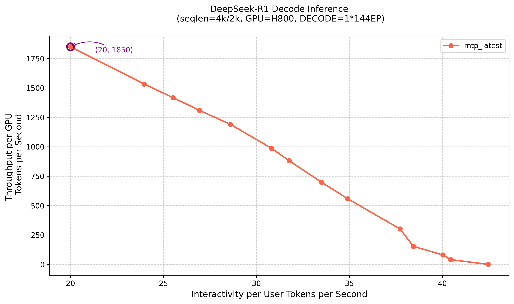

RTP-LLM DeepSeek Replay Tech Report#
Overview#
DeepSeek-V3 has demonstrated strong performance in multiple evaluations, becoming one of the most attention-grabbing open-source large models. Due to its large-scale MoE architecture, optimizing inference performance is a key challenge for engineering deployment. In February, the DeepSeek team successively open-sourced key components including DeepEP, DeepGEMM, FlashMLA, and EPLB. Based on the open-source community’s work, we completed optimization work on RTP-LLM, aligning with the performance of the DeepSeek inference system.
RTP-LLM is an LLM inference acceleration engine developed by Alibaba Aicheng Technology, primarily serving Alibaba Group’s internal business. This article will share some key technical points, shortcomings, and reflections from the implementation process, as a way to thank the open-source community for their help. The relevant code is being organized and refactored, and complete code and reproduction methods will be updated soon.
According to the introduction in DeepSeek Inference System Overview
Total input tokens: 608B, of which 342B tokens (56.3%) hit the on-disk KV cache.
Total output tokens: 168B. The average output speed was 20–22 tokens per second, and the average kvcache length per output token was 4,989 tokens.
Each H800 node delivers an average throughput of ~73.7k tokens/s input (including cache hits) during prefilling or ~14.8k tokens/s output during decoding.
In actual production services, the DeepSeek inference system achieves a prefill throughput of 32.2K per H800 node and a decode throughput of 14.8K TPS per H800 node. In RTP-LLM testing, using 4K input/2K output, under 1.6s TTFT and 50ms ITL constraints, we achieved prefill performance of 42.6K TPS per H800 node and decode performance of 14.7K TPS per H800 node.
Test Results#
Settings#
We deployed in Alibaba Cloud Lingjun H800 RoCE environment using PD separation and distributed EP architecture, setting TP=1, DP=EP=number of GPUs. The prefill single-instance specification is 4 nodes with 32 GPUs, and the decode single-instance specification is 18 nodes with 144 GPUs. During testing, we used 4 prefill instances and 1 decode instance, totaling 272 H800 GPUs.
The test adopted a 4:1 PD instance ratio, which is not the perfect PD ratio. In actual production loads, more complex input/output length fluctuations will be faced, requiring integration with scheduling systems to dynamically and elastically adjust the number of PD instances.
Prefill#

The prefill instance uses 32 EP deployment. Under extreme pressure, a single GPU executing 2 4K requests takes 1.5s, with a throughput of 5333 TPS.
The test did not simulate the impact of cache, which is one of the subsequent areas for improvement.
RTP-LLM also supports hybrid TP/DP/EP deployment. It is recommended to use TP=1 on high-compute H800 GPUs; on compute-constrained cards like H20, choose TP=2/4 based on latency constraints.
Decode#

The decode instance uses 144 EP deployment (128 + 16 redundant). Due to implementation differences, the host takes 2ms less time, but the device is slightly slower. The analysis indicates that the reasons are RoCE vs. IB network differences, lack of CUDA Graph optimization, and some slow kernel implementations. This is also a direction for future optimization.

The figure above shows the decode phase pressure test curve. At lower concurrency, a single user can reach 42 TPS. At 13200 concurrency, the SLA limit of 20 TPS per user is reached, with a single GPU throughput of 1850 TPS.
Before DeepEP was open-sourced, we implemented distributed EP through All2All, achieving excellent throughput improvements compared to single-node setups, but with excessive latency. Besides high network latency, All2All brought severe host synchronization overhead, which was also detrimental to overlapping network and computation time. It is recommended that GPUs not supporting the DeepEP mechanism can equivalently implement Pure Device All2All to achieve similar performance; ASIC accelerator cards can go further and directly perform MoE/Dispatch/Combine overlap.
Implementation and Tricks#
EPLB#
The figure below shows the EPLB latency impact test. We found that the EP balancing state is significantly affected by test data, and test data cannot completely simulate real application load states. EP load balancing strategies remain an area for in-depth exploration in the future.
MicroBatch & Overlapping#
To enable GPU computation and network communication to overlap, we fully implemented the Prefill/Decode Micro Batching solution and integrated it with DeepEP’s overlap mechanism. During the process, we made the following observations:
Whether for Prefill or Decode, since the Dispatch phase transfers FP8 tensors while the Combine phase transfers FP16 tensors, the communication time for the Combine phase is significantly higher than Dispatch. Therefore, when designing overlap solutions, larger time blocks need to be considered to cover the Combine phase communication. Introducing quantized communication in the inference phase is a potential improvement direction for the future.
For Prefill, the time spent on Attention accounts for a relatively small proportion. The final Attention+MoE gate portion and the MoE MLP portion spend similar amounts of time, both of which can cover the relatively long communication time of the Combine phase. Only request segmentation is needed, and the computation/communication of two MicroBatches can interleave. An important detail is that Shared Expert computation is always overlaid in the Combine portion to ensure that the computation time covering Combine is more than that covering Dispatch.
Considering the Qwen3 model, although it has no Shared Expert, the same overlap scheme can still be adopted in the Decode phase, using the Attention operator as a boundary to insert MLP computation, covering Dispatch and Combine communication times before and after respectively. At the framework level, to be compatible with both DeepEP and Vanilla All2All communication overlap functions and considering extension to various hardware, we developed a unified communication callback interface, enabling MicroBatch capabilities to be easily extended to other accelerator cards.
MTP#
We added MTP speculative sampling support to our previously implemented general speculative sampling framework. MTP is the most critical link in DeepSeek ITL optimization. The only way to increase computational intensity in the decode phase is to increase GEMM BS. KV Cache capacity limits Global BS, and MTP only requires BS/2 to achieve the same computational intensity as the original. Enabling MicroBatch for computation-communication overlap has the side effect of increased latency. MTP can reduce average ITL and compensate for the latency caused by MicroBatch. A win-win situation.
PD Disaggregation#
In the DeepSeek-V3 model, due to significant differences in Prefill and Decode computational requirements and different EP strategies, PD separation deployment is a necessary choice. We extended support for Prefill-Decode deployment with different TP specifications, which is particularly important for low-compute cards. We implemented two PD load balancing strategies: KV Cache-based balancing and BS-based balancing. The test data has small BS variance, and under high pressure and high EP traffic, BS balancing is more important for Dispatch/Combine latency. In production environments, BS variance and Seq variance factors need to be comprehensively considered, or Decode instances can be further split according to traffic characteristics.
DeepEP / Network#
DeepEP is primarily optimized for IB environments. When facing the diverse underlying environments and technology stacks in actual production, to achieve engineering deployment and optimal performance, we made the following optimizations and improvements:
Dual uplink performance fix: Through in-depth analysis of Normal kernel (few QP, large messages) and Low latency kernel (many QP, small messages) characteristics, we provided a pure IAAS layer fix function without introducing performance overhead. Specifically, we provided message-level and queue-level load balancing solutions for Normal kernel and Low Latency kernel at the NVSHMEM layer. The optimized version maintains the stability advantages of dual uplinks while achieving communication performance that can match or even slightly surpass single uplink IB network solutions.
Communication mode optimization: By jointly considering intra-node and inter-node network architectures, we optimized intra-node and inter-node traffic patterns, fully utilized available links in the system, achieved traffic balance between network tracks and planes, avoided network traffic conflicts and collisions, and maximized overall system communication efficiency. In Low Latency communication mode, communication latency can be reduced by 60%+.
Intra-node topology self-repair capability: Abnormal intra-node topology reporting affects communication links between network cards and GPUs, leading to network performance degradation. To solve this problem, we implemented intra-node topology self-repair functionality, shielding upper layers from underlying server hardware and software differences, ensuring affinity relationships between GPUs and network cards across different machine types.
Virtualization environment adaptation: To flexibly support complex and variable business scenarios, we supported a high-performance network solution based on commercial card hardware SRIOV virtualization, solved the adaptation problem between SRIOV and DeepEP, and completed large-scale deployment through optimization to make VF and PF performance consistent.
CUDA Kernel Fusion#
We conducted detailed analysis of the CUDA kernel execution flow and optimized based on model characteristics:
Moved some matrix multiplication to BF16 format computation. FP8 matrix multiplication incurs greater overhead due to the need for quantization operations when the scale is insufficient.
Advanced the transpose in Rotary Embedding to the weight loading phase to avoid introducing Elementwise operators.
Fuse Quantization and Transpose before GEMM computation.
Future plans include fusing Activation and Quantization.
PDL#
The Hopper architecture introduced Programmatic Dependent Launch (PDL), allowing two adjacent kernels on the same CUDA stream to execute overlapped, enabling the latter kernel to complete initialization and other work in advance while the former kernel is executing. By introducing PDL into GEMM kernels, we can execute GEMM initialization operations in advance during the computation of other kernels like Quantization, improving overall system performance.
The introduction of PDL also brings more possibilities for kernel-level optimization, such as GEMM Weight Prefetch. After overlapping Quantization operations with GEMM through PDL, prefetch operations for weights can be added to the overlapping portion of the GEMM kernel, so that when the MMA is actually executed, the required weight tensor is already in the L2 cache, achieving the purpose of accelerating the GEMM kernel.
Framework Overhead#
Overall framework overhead mainly concentrates on two parts: one part is host overhead between adjacent Forward Steps, around 1.5ms; the other part is kernel launch overhead, around 2ms.
The main issue with host overhead between Forward Steps is our bulky Dynamic Batch implementation, whose performance overhead is linearly related to BS. We lightweighted the Dynamic Batch implementation, processing operations not dependent on the next step asynchronously or with multithreading. Ideally, under 128 BS conditions, we can achieve under 200us. The current excessive host overhead is largely due to an additional Dynamic Batch in MTP situations, which can be further optimized away.
Kernel Launch Overhead is primarily due to too many GPU kernels. With MicroBatch enabled, the number of GPU kernels doubles, making the problem more severe. A better solution is CUDA Graph. Here, performance and architecture complexity need to be balanced. The RTP-LLM framework has already avoided host-side launch overhead issues through C++ implementation. However, we observed that even when launch speed far exceeds kernel execution speed, there is still some launch overhead at the GPU device level, which CUDA Graph can mitigate to some extent. We look forward to NVIDIA being able to thoroughly solve this problem in future drivers or hardware versions.
Weights Loading#
Model weight loading speed directly affects R&D and deployment efficiency. For 671B weights, we achieved minute-level loading through optimization with the following specific plan:
Weight preprocessing and format pre-conversion. RTP-LLM needs to perform Split, Transpose, and other operations on weights during loading. We designed a preprocessing system to convert raw weights into the weight format required by the framework in advance. After preprocessing, computational overhead during loading is eliminated.
Direct IO + Pinned Memory acceleration for large file reading. To address the I/O bottleneck of individual weight files exceeding 100GB, we used Direct IO to bypass the system Page Cache mechanism, established a fixed memory pool through CUDA Pinned Memory, and eliminated multiple memory copies between kernel space and user space.
Limitations and Future Work#
In terms of operator performance, we have not yet fully aligned with DeepSeek. Core operators such as Prefill Attention and Decode Quantization have certain performance gaps and require further optimization. Additionally, CUDA Graph is also a key improvement direction.
EPLB essentially requires deep collaboration between algorithm design and system engineering. Currently, there is no universal and efficient solution. For dynamic load distribution characteristics under specific application scenarios, more adaptive and robust load balancing strategies need to be explored.
MicroBatch is not the only solution for computation-communication overlap. Combining excellent work such as FLUX and Triton-distributed, multiple parallel mode fusion is a direction worth exploring in the future.
On DeepSeek-V3, the Pure EP solution matches well with 6K length short sequence tasks. For longer sequence scenarios, constrained by KV Cache capacity, more sophisticated parallel modes need to be designed to improve MoE computational efficiency.
In large-scale testing and deployment practices, we observed multiple instances where single GPU failures caused the entire 144 GPU decode instance to fail. To address this, we introduced ACCL combined with service discovery mechanisms in the PD separation architecture, building a serverless PD service with elasticity and high availability. We plan to further combine task schedulers and communication library capabilities in the future to build a Serverless CCL (Collective Communication Library) framework with high fault tolerance and elastic scaling capabilities.
Unlike H800, the heterogeneous computing cards that can be scaled in our production environment generally have lower compute power. Optimizing throughput under TTFT and ITL constraints in this context is a highly challenging problem. At the same time, how to optimize performance well across various card types and generations is also a problem we need to work to solve.
For Qwen3 MoE#
Compared to DeepSeek-V3, Qwen3-235B-A22B is smaller in model size but supports seamless Thinking Mode switching. For 4K Input/2K Output scenarios, similar optimization strategies can be adopted, adjusting parallel modes in combination with specific model parameter configurations.
From the KV Cache usage perspective, Qwen3-235B-A22B’s per-token KV Cache overhead is 94×4×128×2=96KB, while DeepSeek-V3 is 61×1536=93KB, which are close.
From the Attention computation latency perspective, Qwen3-235B-A22B uses 64-head GQA, while DeepSeek-V3 uses 128-head MLA, with computation latency being approximately 50% of the latter. Considering the impact of memory access latency, actual latency will be slightly higher.
From the Dispatch/Combine communication perspective, Qwen3-235B-A22B is about 40% of DeepSeek-V3.
From the MoE GEMM computation latency perspective, due to Qwen3-235B-A22B’s parameter scale being 40%-50%, the computation latency is about 50%.
In summary, in large-scale cluster deployment, comprehensively evaluating from the two dimensions of KV Cache capacity limitations and MoE computational efficiency, Qwen3-235B-A22B can adopt similar deployment modes. Compared to DeepSeek-V3, Qwen3-235B-A22B can support longer sequence lengths with better performance in terms of latency and throughput. For compute-constrained cards like H20, EP can be reduced and TP introduced to reduce network latency while achieving good computational utilization.
Thanks#
Through two months of continuous effort, we have aligned with the performance of the DeepSeek inference engine. We thank the open-source community for sharing excellent open-source models such as DeepSeek, Qwen, and Llama, as well as excellent engineering engines and optimizations such as FasterTransformer, TensoRT-LLM, FlashAttention, FlashInfer, Transformers, vLLM, and SGLang. We believe that open-source, openness, and communication are the inevitable path to achieving AGI. We hope to jointly promote AI technology innovation and ecosystem prosperity through in-depth discussion and exchange with the community.